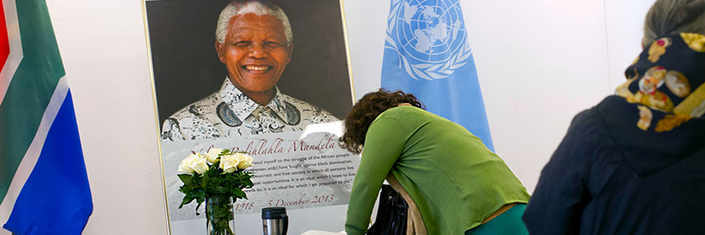

Nelson Mandela
He is one of South Africa's first black lawyers, and also the country's first black head of state. he is the first elected in a fully representative democratic election.

The United Nations Joins the World
in Paying Tribute to Nelson Mandela
Here is the timeline of Nelson mandela
- 1918 - Born in a small village of Mvezo in the eastern cape province of South Africa.
- 1925 - He attended a local methodist mission school near his childhood village of Qunu in Eastern Cape.
- 1939 - Mendela began attending the university of Fort Hare, one of the few higher educations open to black South Africans at the time. At Fort Hare, he pursued a Bachelor of Arts degree.
- 1940 - Mandela was expelled from the university for his involvement in a student protect against university policies.
- 1942 - He joined the law firm.
- 1943 - Mandela moved to Johannesburg to pursue his legal studies at the University of the Witwatersrand. He earned his Bachelor of Arts degree from UNISA.
- 1944 - He got married to Evelyn Mase. That was his first marriage.
- 1948 - he enrolled at the University of the Witwatersrand for a law degree.
- 1948 - He joined the law firm of Terblanche and Briggish as an articled clerk, gaining further experience in the legal profession.
- 1952 - Mandela and Oliver Tambo established South Africa's first black law firm, "Mandela & Tambo," in Johannesburg.
- 1961 - he co-founded the armed wing of the ANC, Umkhonto we Sizwe (MK), which engaged in sabotage against government installations.
- 1962 - His life story then took a dramatic turn, as he spent 27 years in prison, becoming a symbol of the anti-apartheid struggle and a global icon for justice and human rights.
- 1990 - After intense domestic and international pressure, President F.W. de Klerk announced Mandela's release from prison, marking a pivotal moment in South African history.
- 1994 - South Africa held its first fully democratic, non-racial elections. Nelson Mandela was elected as the country's first black President. His presidency marked the end of decades of racial discrimination and marked a new era of inclusivity and equality.
- 1994 - Nelson Mandela championed the idea of reconciliation and forgiveness to heal the wounds of apartheid throughout his life, but it became particularly prominent during his presidency
- 1996 - Mandela signed into law the new Constitution of South Africa, which enshrined principles of equality, human rights, and social justice. The Constitution was seen as a significant step towards building a more inclusive and reconciled nation.
- 1999 - Mandela focused on philanthropic work through the Nelson Mandela Foundation, promoting education, healthcare, and social justice initiatives. After stepping down as President.
- 2013 - He died
"I learned that courage was not the absence of fear, but the triumph over it. The brave man is not he who does not feel afraid, but he who conquers that fear."